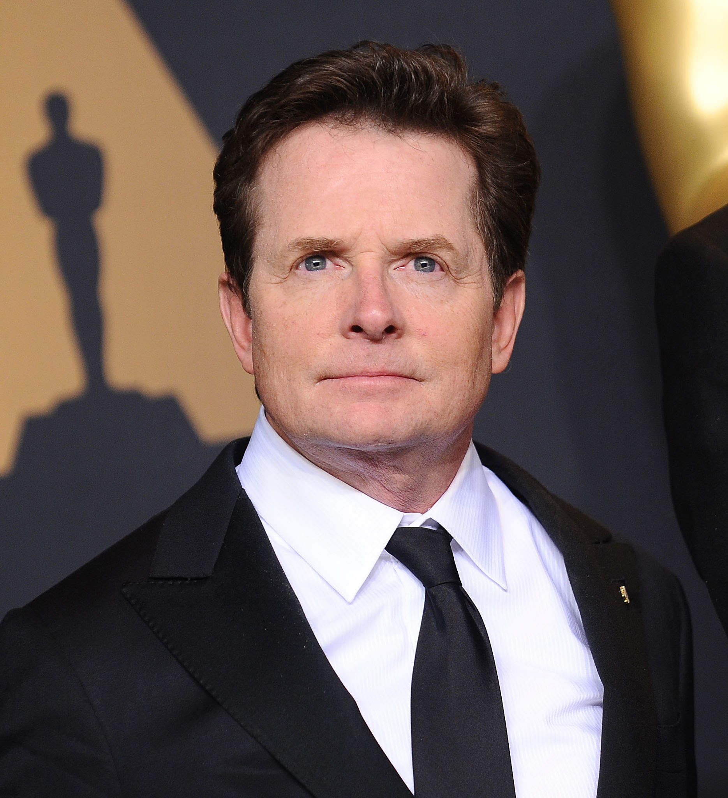
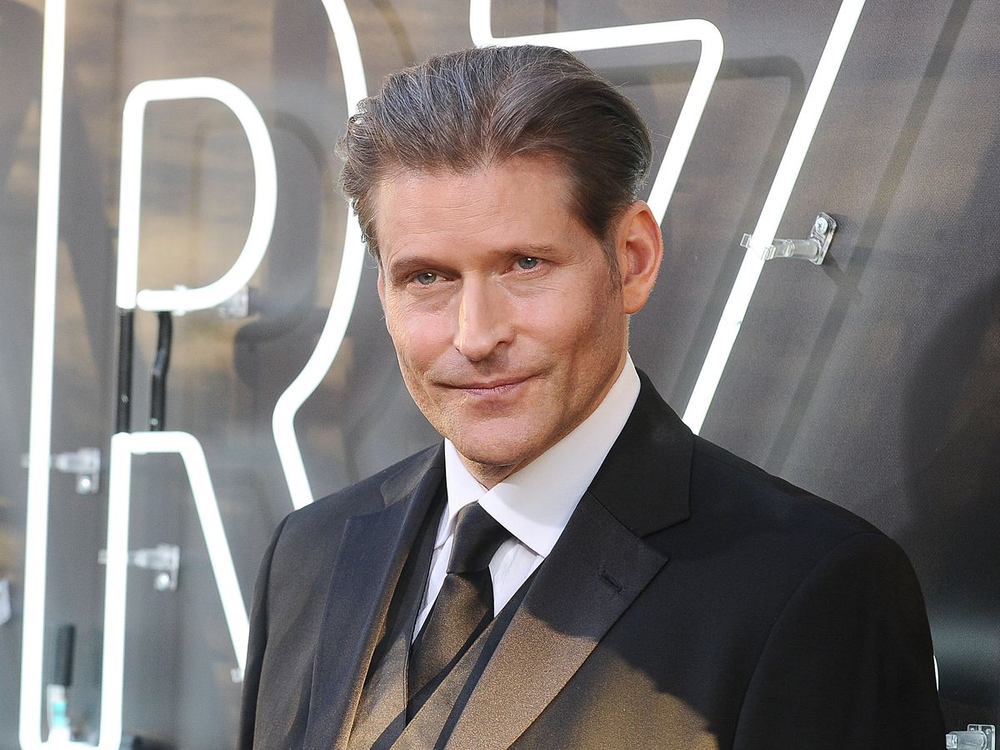
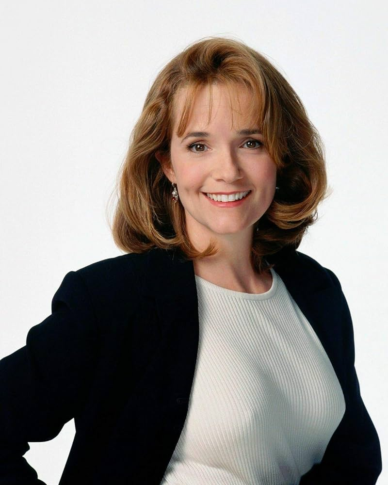

- Michael J.Fox 
- Christopher Lloyd
- Crispin Glover 
- lea Thompson 
- Thomas F.Wilson
- Claudia Wells
Michael Andrew Fox (Edmonton, Alberta, 9 de junio de 1961), más conocido como Michael J. Fox, es un actor canadiense-estadounidense retirado. Su carrera en el cine y la televisión comenzó a finales de los años setenta. Entre sus papeles se destacan Marty McFly en la trilogía de Regreso al futuro (1985-1990); Alex Keaton en Enredos de familia (1982-1989), por la cual ganó 3 premios Emmy y 1 Globo de Oro, y Mike Flaherty en Spin City (1996-2000), por la cual ganó 1 Emmy, 2 Globos de Oro y 2 SAG. Tras iniciar su carrera como actor con el nombre de Michael Fox, el canadiense añadió la letra J. para no coincidir con el intérprete del mismo nombre y como homenaje a otro actor: Michael J. Pollard.

Christopher Allen Lloyd (Stamford, Connecticut; 22 de octubre de 1938) es un actor estadounidense. Ha interpretado a Doc Emmett Brown en la trilogía de Back to the Future (1985, 1989 y 1990), a Fester Addams en The Addams Family (1991) y Addams Family Values (1993), y al Juez Doom en ¿Quién engañó a Roger Rabbit? (1988). También ha trabajado como actor de voz interpretando a personajes animados, principalmente villanos, como Merlock en Patoaventuras: La película - El tesoro de la lámpara perdida (1990) o Grigori Rasputín en Anastasia (1997).
Crispin Hellion Glover (Nueva York, Estados Unidos; 20 de abril de 1964) es un actor de cine, pintor, cineasta, escritor, músico, coleccionista de objetos y archivista de esotérica estadounidense. Glover es conocido por interpretar a George McFly en Back to the Future (1985), a Creepy Thin Man en la adaptación de Los ángeles de Charlie (2000), Willard Stiles en Willard (2003) y a Ilosovic Stayne, la Sota de Corazones, en la película de 2010 Alicia en el país de las maravillas. A finales de los años 1980, Glover creó su propia empresa editorial, convertida en los años 1990 también en productora cinematográfica, Volcanic Eruptions.
Lea Kathleen Thompson (Rochester, Minnesota, 31 de mayo de 1961) es una actriz estadounidense conocida principalmente por su papel como Lorraine McFly en la trilogía Back to the Future además de por All the Right Moves con Tom Cruise.

Thomas Franklin Wilson Jr. (Filadelfia, 15 de abril de 1959) es un actor, comediante, escritor, músico, pintor y actor de voz estadounidense. Es más conocido por su papel del antagonista Biff Tannen en la trilogía de Back to the Future (1985-1990).

Claudia Grace Wells (Kuala Lumpur, 5 de julio de 1966) es una actriz estadounidense, conocida por su papel de Jennifer Parker en la primera película de la trilogía de Back to the Future (1985).